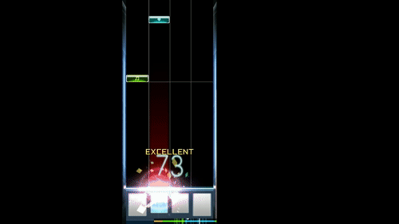

Présentation :
Osu est un jeu de rythme créé par Dean «peppy» Herbert, écrit en C#, et inspiré du jeu Osu! Tatakae! Ōendan (connu en occident sous le nom d'Elite Beat Agents) sur Nintendo DS. Il a été lancé le 16 septembre 2007 en bêta ouverte.
Une des particularités de ce jeu de rythme est qu'il ne possède pas un nombre limité de morceaux musicaux jouables (appelés des beatmaps dans le jeu). Ce sont les membres de la communauté de joueurs qui créent les beatmaps, elles sont téléchargeables sur le site officiel du jeu.
Le but du jeu est de surmonter les obstacles en rythme, de manière à marquer le plus de points possible et d'obtenir le plus grand score possible afin de gagner des performance points (appelés plus communément « PP » en jeu), censés représenter le niveau du joueur dans le classement soumis à ce critère. Plus le joueur respecte le rythme de la beatmap, plus il obtient un grand score de précision et de points, si le joueur est trop mauvais, la partie s'interrompt et le score n'est pas comptabilisé (les PP ne sont donc pas comptabilisés mais le score obtenu, lui, est ajouté à sa barre de progression).
À chaque fin de beatmap, une note est donnée au joueur selon la précision et le combo obtenu allant de D pour la pire à SS pour une réussite parfaite (D ; C ; B ; A ; S et SS).

Il existe 4 modes de jeu : Taiko / osu!mania / Catch the Beat / osu!, ici nous n'expliquerons pas le mode Catch the Beat car il est le moins joué. Le mode Taiko est un simple : il faut appuyer sur une touche en fonction de la couleur (correspondant au rond rouge ou bleu) ou appuyer sur les deux touches en même temps pour un gros rond.

Pour osu!mania il faudra être en rythme comme sur un piano avec 4, 6 ou 8 touches (certains le considère comme le mode de jeu le plus dur du jeu). Parfois il faudra rester appuyer sur une même touche car la note dure plus longtemps. Le niveau de difficulté sur tous les modes est représenté par des étoiles (allant de 1 à 10), l'image que vous voyez représente une beatmap de niveau 3,7 étoiles.

Enfin le mode osu! qui est celui de base et donc le plus joué, comprend de nombreux obstacles : il faut appuyer sur les cercles en rythme en se dirigeant avec la souris ou une tablette graphique, parfois il faudra rester appuyer pour effectuer un slide et pour tourner le gros rond. Ici la beatmap à un niveau de 7,2 étoiles.